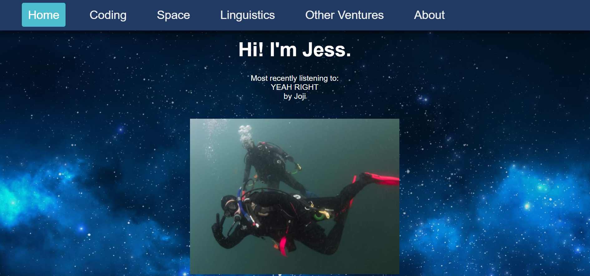

Other Ventures

I have a lot of varied interests that do not necessarily fit on the other pages. This includes music, performing arts, 3D and CAD design, and more!
Learning what a "static website" means
January 2022
Languages/toolkits used: HTML, JQuery, probably something else
Ah, how the mighty have fallen! In an attempt to personalize my website, I have had some ups, some downs, and now a complete full-stop to a project I had been hoping to implement.
I have recently been using this wonderful scrobbler called LastFM(found at last.fm) to track my music taste. For those unfamiliar, a scrobbler is a program that scrapes your specified music-streaming services and tracks the songs. LastFM also gives you data on the genre, how your listening has changed over time, and other truly excellent statistics.
For the purposes of my website's homepage, I really wanted to add a section showing my most recently listened-to song - however, I had no idea how to implement this. A couple of hours later learning about how JQuery handles HTTP requests and much trial and error parsing the XML file that LastFM returns, I got it! I had done it (picture evidence shown above! I know I know, I could have just written "Yeah Right by Joji" and you would never have known the difference, but please believe me). So, success, right? WRONG!
This is where GitHub Pages comes in. All is fine and well, it works locally, and I commit the code - and it doesn't work in production. A quick Google Search tells me that GitHub Pages cannot handle GET and PUT requests. A TRAGEDY!
Was it all for naught? Potentially. Even if I did not get to actually implement it, what a fun project it was! It really makes me think about what kind of websites I actually can create for myself, should I want to ever pay for a non-static website. I most likely would want a website with a more aesthetically-pleasing implementation of my LastFM data - maybe even an embedded website displaying some interesting visualization from another website; maybe I will add some kind of nice visuals of my own, perhaps a photo gallery? Who knows what the future holds!
Retractable Poi
Spring 2020
During Spring of 2020, I took a Computer Graphics and Design course, which was retrospectively one of the greatest decisions I have ever made. I have worked with CAD a lot over the years for various projects, but I have never had any formal training. Taught by Dr. Yesilevskiy, I learned valuable skills for modeling all sorts of objects and I got hands-on experience that still helps me to this day.
The best part of this class was the final project, where we were simply told to "find a problem in the world and fix it" with some kind of product. I decided to focus on the flow arts, a subset of performing arts that uses props that are swung, thrown, or spun. I more specifically focused on poi, which are at a very basic level balls on strings that can be spun or thrown.
Because typical poi spinners perform in often weird locations, it is a common problem that they get lost or stolen, and because they are usually very expensive (a pair of programmable LED poi can cost upwards of $220 USD), it can cause financial burden on the spinner. I decided to remedy this problem by making retractable poi that can be worn on the arm, then extended during spinning, and then retracted later. It was a challenge to model, especially modeling fabric, but it ended up being a product I was very proud of!
For a clearer description of its purpose, design, and
function, check out my proposal here.
For some of the CAD files,
check out my GrabCAD here. Below is the (admittedly very not-serious)
pitch video that we were also tasked with creating!